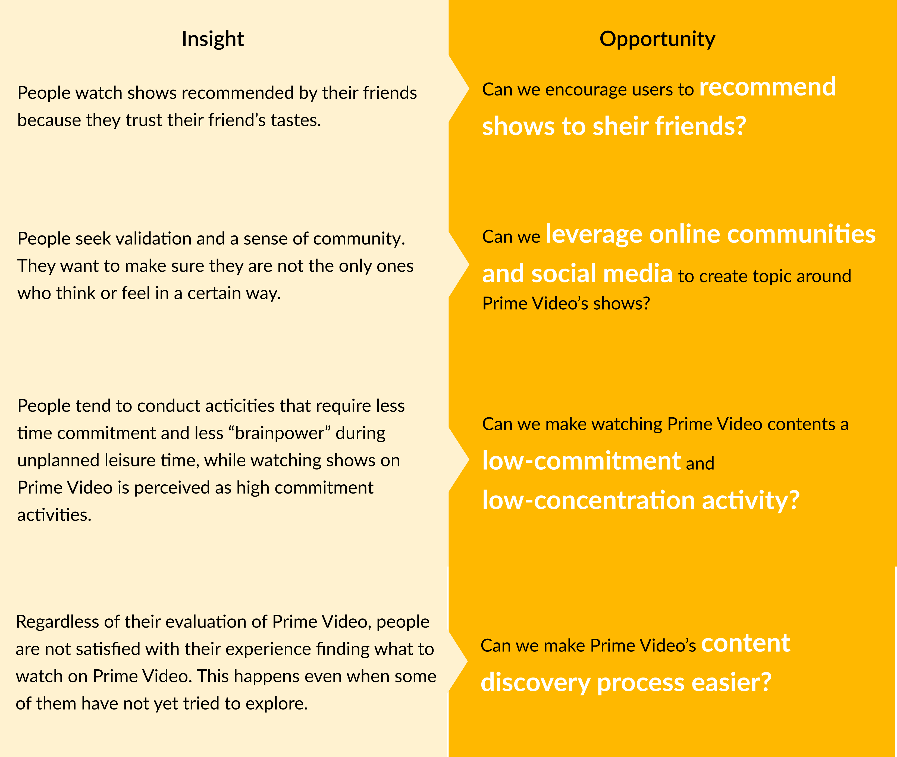
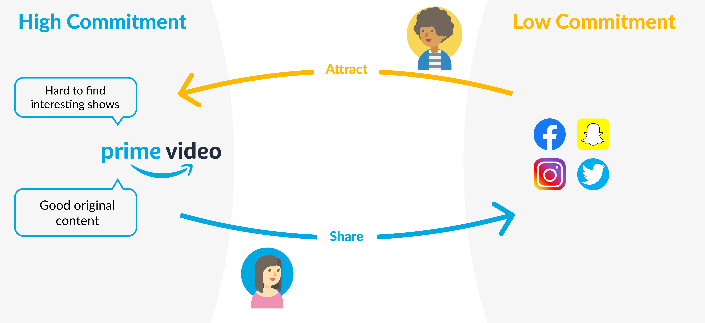

How might we make Amazon Prime Video a destination when people are waiting for coffee?
Overview
Starting in October and ending in November 2019, this project is our proposal to the Kellogg Design Challenge sponsored by Amazon Prime Video. Our team, consisting of six CMU students with diverse backgrounds, competed in the semi-final round of the competition.
The problem statement, provided by Prime Video, outlines a new direction for potential future Prime Video use scenarios:
How could Prime Video become the destination for TV and movie viewers, outside of times when they are planning to watch something? (i.e. what is our 3-minute coffee line experience?)
In the following parts, I will show you the solution we proposed and walk you through our research and design process.
Our Solution: VideoMark
VideoMark, consisting of three features:
The three features creates a close cycle that encourages active Prime Video users to mark and share video clips to social media, and allows non Prime Video users to watch a short clip during their coffee break, thus creates a hook leading them to become a Prime Video user at the instant or later. The cycle, put into a diagram, look like this:
In the next sections, I will show you how we approached the problem and our design research process, and explain the solution in detail.
Design Research
A good practice for exploring a problem space is always to start by stating what we know and what we don't know. According to the questions listed, we selected the following methods to empathize with our users:
My contributions in this stage include:
- Conducted passive observation in context
- Lead the creation of the semi-structured interview protocol and interviewed 7 Prime members
- Lead the thematic analysis with affinity diagram
- Created persona for two user architypes
- Helped analyze survey data
Domain Research: Understand the Market
To understand the current market environment, potential challenges Prime Video is facing, and people's general behavior using digital devices, we asked the following questions:
- What are people's behavior patterns on digital devices and online platforms?
- What are the trends in online platforms including social media and video streaming?
- What is Prime Video's market status?
We conducted domain research by looking up resources related to Prime Video usage, Prime member ecosystem structure, video streaming market, screen device usage, and trends involving video streaming and social media. We found the following insights particularly interesting:

Passive Observation: Discover behavior patterns in context
A wide range of scenario falls into ''when people are not planning on watching something.'' We think the scenario includes but does not limit to waiting for take-outs or seatings in restaurants, in between classes and meetings, coffee breaks, or even time in bathrooms. We defined the scenario as ''unplanned leisure time'' for easier reference. To understand what people currently do and find potential leverage points, we asked the following question:
- What do people currently do during their unplanned leisure time?
- What devices are they using during unplanned leisure time?
- How do they use their devices in the context?
In order to get real data about what people really do in context, we conducted passive observation in food lounges in shopping malls, coffee shops in schools and commercial districts, laundromats, student lounges, restaurant waiting areas, and took note of their activities. Here are some interesting insights we found:
Semi-Structured Interviews: Empathize with users
Having some vague ideas for potential opportunities, we proceed to ask our potential users about their behaviors and motivations. We want to step into their shoes to create products that solve the right problem. I created the interview protocol based on the following questions:
- How do they spend their leisure time?
- When, where, how, and why do they watch videos:
- How do they decide what content to watch?
- What is the experience like using different streaming platforms?
Interviewees, aged between 18 and 35, who have or have not used Prime Video were recruited, and interviews were conducted until there is no significant new information. After transcripting, coding, and affinity diagraming, we found the following themes that may lead to potential opportunities:

Persona: Evoke Empathy
Creating personas helps us summarize the information from our research. Wtih two characters in mind, we are more connected to our target users while brainstorming and designing the solutions.
Rachel is a Prime member as well as an active Prime Video user, while Jack is also a Prime member, but he never used Prime Video, and pay almost no attention to what it has to offer.
They share the behavior of being social addicts, meaning they like to see what their friends are doing and are willing to take part in their activities.

With an understanding of Rachel's and Jack's behavior pattern, we move on to tailor solutions for them.
Innovation Opportunity & Final Concept
My contributions in this stage include:
- Provided solutions that was built into the final conept
- Collaborated to came up with criteria for narrowing down solutions
- Collaborated to map out interaction flow
As a reminder, here are the potential opportunities we have identified:
- How can we make the 76 million Prime members also Prime Video users?
- How can we make the current long content on Prime Video shorter to fit better to smart phones?
- How can we leverage online communities and social media to make watching Prime Video contents a low-commitment and low-concentration activity?
- How can we encourage users to recommend shows to sheir friends?
- How can we make Prime Video’s content discovery process easier?
If we put the opportunities together with Rachel and Jack, the prompt becomes:
How can we leverage Jack and Rachel's behavior as social addicts to make viewing the content of Prime Video a low-commitment activity and attract more users to the Prime Video platform?
To put it simpler, how can we create an experience that serve the purpose of the diagram below:

Final Concept
We evaluated more than 50 solutions derived from various brainstorming sessions based on criteria including:
- User experience:
- Ease of adoption
- Ease of use in context
- Content purchasing
- Integration into current Prime Video system
- Integration into current Prime member ecosystem
- Technical feasibility
- Legal feasibility
- Degree of change in the current content production system
- Design complexity (in order to complete the UI design in time)
VideoMark is a combination of several solution that compliment each other to complete the close loop. In the next section, I will walk you through the details of the solution.